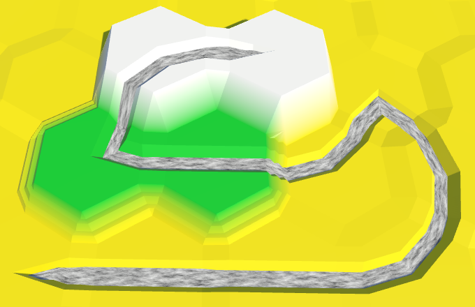

Hex Map 6
Rivers
- Add river data to cells.
- Support dragging to draw rivers.
- Create river channels.
- Use more than one mesh per chunk.
- Make a generic pool for lists.
- Triangulate and animate flowing water.
This tutorial is the sixth part of a series about hexagon maps. The previous part was about supporting larger maps. Now that we can do that, we can start thinking about larger terrain features. In this case, rivers.
Cells With Rivers
There are three ways to add rivers to a hex grid. The first approach is to let them flow from cell to cell. This is how Endless Legend does it. The second method is to let them flow in between cells, from edge to edge. This is how Civilization 5 does it. And the third way is to have no special river structures at all, but to use water cells to suggest them. This is how Age of Wonders 3 does it.
In our case, cell edges are already occupied by slopes and cliffs. That leaves little room for rivers. So we're going to make them flow from cell to cell. This means that every cell either has no river, has a river flowing through it, or is either the begin or end point of a river. Of the cells that have a river passing through them, it either goes straight, makes a one-step turn, or makes a two-step turn.
We're not going to support forking or merging rivers. It would make things a lot more complex, especially water flow. We also won't concern ourselves with larger bodies of water yet. Those come in a later tutorial.
Keeping Track of Rivers
A cell that has a river flowing through it can be though of as having both an incoming and an outgoing river. If it contains the beginning of a river, it only has an outgoing river. And if it contains the end of a river, it only has an incoming river. We can store this information in HexCell with two booleans.
bool hasIncomingRiver, hasOutgoingRiver;
But this is not enough. We also need to know the direction of these rivers. In the case of an outgoing river, this indicates where it's going. And for an incoming river, this indicates where it's coming from.
bool hasIncomingRiver, hasOutgoingRiver; HexDirection incomingRiver, outgoingRiver;
We're going to need this information when triangulating cells, so add getter properties to access it. We won't support directly setting them. We'll add a different method for that later.
public bool HasIncomingRiver {
get {
return hasIncomingRiver;
}
}
public bool HasOutgoingRiver {
get {
return hasOutgoingRiver;
}
}
public HexDirection IncomingRiver {
get {
return incomingRiver;
}
}
public HexDirection OutgoingRiver {
get {
return outgoingRiver;
}
}
A useful question is whether a cell has a river in it, regardless of the specifics. So let's add a property for that as well.
public bool HasRiver {
get {
return hasIncomingRiver || hasOutgoingRiver;
}
}
Another typical question is whether we have a beginning or ending of a river. If the state of the incoming and outgoing river is different, then this is the case. So that becomes another property.
public bool HasRiverBeginOrEnd {
get {
return hasIncomingRiver != hasOutgoingRiver;
}
}
And finally, it is useful to know whether a river is flowing through a certain edge, regardless whether it's incoming or outgoing.
public bool HasRiverThroughEdge (HexDirection direction) {
return
hasIncomingRiver && incomingRiver == direction ||
hasOutgoingRiver && outgoingRiver == direction;
}
Removing Rivers
Before worrying about how to add a river to a cell, let's first support removing them. First, a method for removing just the outgoing part of a river.
If there isn't an outgoing river to begin with, then there's nothing to do. Otherwise, turn it off and refresh.
public void RemoveOutgoingRiver () {
if (!hasOutgoingRiver) {
return;
}
hasOutgoingRiver = false;
Refresh();
}
But that is not all. An outgoing river has to go somewhere. So there has to be a neighbor with an incoming river. We have to get rid of that one as well.
public void RemoveOutgoingRiver () {
if (!hasOutgoingRiver) {
return;
}
hasOutgoingRiver = false;
Refresh();
HexCell neighbor = GetNeighbor(outgoingRiver);
neighbor.hasIncomingRiver = false;
neighbor.Refresh();
}
Removing the river from a cell only changes the appearance of that cell. Unlike when editing elevation or color, its neighbors are not affected. So we only have to refresh the cells itself, not its neighbors.
public void RemoveOutgoingRiver () {
if (!hasOutgoingRiver) {
return;
}
hasOutgoingRiver = false;
RefreshSelfOnly();
HexCell neighbor = GetNeighbor(outgoingRiver);
neighbor.hasIncomingRiver = false;
neighbor.RefreshSelfOnly();
}
This RefreshSelfOnly method simply only refreshes the cell's chunk. As we're not changing rivers when initializing the grid, we don't have to worry about whether the chunk has been assigned yet.
void RefreshSelfOnly () {
chunk.Refresh();
}
Removing the incoming river works the same way.
public void RemoveIncomingRiver () {
if (!hasIncomingRiver) {
return;
}
hasIncomingRiver = false;
RefreshSelfOnly();
HexCell neighbor = GetNeighbor(incomingRiver);
neighbor.hasOutgoingRiver = false;
neighbor.RefreshSelfOnly();
}
And removing the entire river just means removing both the outgoing and incoming river parts.
public void RemoveRiver () {
RemoveOutgoingRiver();
RemoveIncomingRiver();
}
Adding Rivers
To support the creation of rivers, all we need is a method to set the outgoing river of a cell. This should override any previous outgoing river, and set the corresponding incoming river.
First, there's nothing to do when the river already exists.
public void SetOutgoingRiver (HexDirection direction) {
if (hasOutgoingRiver && outgoingRiver == direction) {
return;
}
}
Then, we have to ensure that there is a neighbor in the desired direction. Also, rivers cannot flow uphill. So we'll have to abort if the neighbor has a higher elevation.
HexCell neighbor = GetNeighbor(direction);
if (!neighbor || elevation < neighbor.elevation) {
return;
}
Next, we have to clear the previous outgoing river. And we also have to remove the incoming river, if it overlaps with our new outgoing river.
RemoveOutgoingRiver();
if (hasIncomingRiver && incomingRiver == direction) {
RemoveIncomingRiver();
}
Now we can move on to setting the outgoing river.
hasOutgoingRiver = true; outgoingRiver = direction; RefreshSelfOnly();
And don't forget to set the incoming river of the other cell, after removing its current incoming river, if any.
neighbor.RemoveIncomingRiver(); neighbor.hasIncomingRiver = true; neighbor.incomingRiver = direction.Opposite(); neighbor.RefreshSelfOnly();
Preventing Uphill Rivers
While we have made sure that we can only add valid rivers, other actions can still result in invalid ones. When we change the elevation of a cell, we must once again enforce that rivers can only flow downhill. All illegal rivers have to be removed.
public int Elevation {
get {
return elevation;
}
set {
…
if (
hasOutgoingRiver &&
elevation < GetNeighbor(outgoingRiver).elevation
) {
RemoveOutgoingRiver();
}
if (
hasIncomingRiver &&
elevation > GetNeighbor(incomingRiver).elevation
) {
RemoveIncomingRiver();
}
Refresh();
}
}
Editing Rivers
To support editing rivers, we have to add a river toggle to our UI. Actually, we need to support three edit modes. Either ignore rivers, add them, or remove them. We can use a simple optional toggle enumeration to keep track of this. Because we'll only use it inside the editor, you can define it right inside the HexMapEditor class, along with a river mode field.
enum OptionalToggle {
Ignore, Yes, No
}
OptionalToggle riverMode;
And we need a method to adjust the river mode via the UI.
public void SetRiverMode (int mode) {
riverMode = (OptionalToggle)mode;
}
To control the river mode, add three toggles to the UI and combine them into a new toggle group, just like the colors. I adjusted the toggles so their labels are below the checkboxes. This makes them thin enough to put all three options in a single row.
Detecting Drags
To create a river, we need both a cell and a direction. Currently, HexMapEditor does not give us this information. So we have to add support for dragging from one cell to another.
We need to know whether we have a valid drag, and its direction. And to detect a drag, we have to remember the previous cell as well.
bool isDrag; HexDirection dragDirection; HexCell previousCell;
Initally, when not dragging, there is no previous cell. So whenever there is no input, or we don't interact with the map, we have to set it to null.
void Update () {
if (
Input.GetMouseButton(0) &&
!EventSystem.current.IsPointerOverGameObject()
) {
HandleInput();
}
else {
previousCell = null;
}
}
void HandleInput () {
Ray inputRay = Camera.main.ScreenPointToRay(Input.mousePosition);
RaycastHit hit;
if (Physics.Raycast(inputRay, out hit)) {
EditCells(hexGrid.GetCell(hit.point));
}
else {
previousCell = null;
}
}
The current cell is the one that we find based on the hit point. After we're done editing cells this update, that cell becomes the previous cell for the next update.
void HandleInput () {
Ray inputRay = Camera.main.ScreenPointToRay(Input.mousePosition);
RaycastHit hit;
if (Physics.Raycast(inputRay, out hit)) {
HexCell currentCell = hexGrid.GetCell(hit.point);
EditCells(currentCell);
previousCell = currentCell;
}
else {
previousCell = null;
}
}
After determining the current cell, we can compare it with the previous cell, if there is any. If we end up with two different cells, then we might have a valid drag and should check this. Otherwise, it certainly isn't a drag.
if (Physics.Raycast(inputRay, out hit)) {
HexCell currentCell = hexGrid.GetCell(hit.point);
if (previousCell && previousCell != currentCell) {
ValidateDrag(currentCell);
}
else {
isDrag = false;
}
EditCells(currentCell);
previousCell = currentCell;
}
How do we validate a drag? By verifying that the current cell is a neighbor of the previous cell. We check this by looping through its neighbors. If we find a match, then we also immediately know the drag direction.
void ValidateDrag (HexCell currentCell) {
for (
dragDirection = HexDirection.NE;
dragDirection <= HexDirection.NW;
dragDirection++
) {
if (previousCell.GetNeighbor(dragDirection) == currentCell) {
isDrag = true;
return;
}
}
isDrag = false;
}
Adjusting Cells
Now that we can detect drags, we can set outgoing rivers. We can remove rivers as well, we didn't need drag support for that.
void EditCell (HexCell cell) {
if (cell) {
if (applyColor) {
cell.Color = activeColor;
}
if (applyElevation) {
cell.Elevation = activeElevation;
}
if (riverMode == OptionalToggle.No) {
cell.RemoveRiver();
}
else if (isDrag && riverMode == OptionalToggle.Yes) {
previousCell.SetOutgoingRiver(dragDirection);
}
}
}
This will draw a river from the previous cell to the current cell. But it ignores the brush size. That might make sense, but let's draw rivers for all cells covered by the brush anyway. This can be done by working relative to the cell that's being edited. In this case, we do have to make sure that the other cell does exist.
else if (isDrag && riverMode == OptionalToggle.Yes) {
HexCell otherCell = cell.GetNeighbor(dragDirection.Opposite());
if (otherCell) {
otherCell.SetOutgoingRiver(dragDirection);
}
}
We are now able to edit rivers, although cannot see them yet. You can verify that it works by inspecting the edited cells with the debug inspector.
River Channels Between Cells
When triangulating a river, we have to consider two parts. There's the river's channel, and the water that's flowing through it. We'll first create the channels and leave the water for later.
The simplest part of a river is where it flows across the connection between cells. Currently, we triangulate this area with a strip of three quads. We could add a river channel to that by lowering the middle quad and adding two channel walls.
This would require two additional quads in case of a river, and produces a channel with vertical walls. An alternative approach is to always use four quads. Then we can lower the middle vertex to form a channel with slanted walls.
Always using the same amount of quads is convenient, so let's go with that option.
Adding an Edge Vertex
Going from three to four quads per edge requires an additional edge vertex. Refactor EdgeVertices by first renaming v4 to v5 and then v3 to v4. Doing it in this order ensures that all code keeps referencing the correct vertices. Use your editor's rename or refactor option for this, so the changes are applied everywhere. Otherwise, you'll have to manually go through all code and make the adjustments.
public Vector3 v1, v2, v4, v5;
After everything has been renamed, add a new v3.
public Vector3 v1, v2, v3, v4, v5;
Include the new vertex in the constructor. It sits halfway between the corner vertices. Also, the other vertices should now end up at ½ and ¾, instead of ⅓ and ⅔.
public EdgeVertices (Vector3 corner1, Vector3 corner2) {
v1 = corner1;
v2 = Vector3.Lerp(corner1, corner2, 0.25f);
v3 = Vector3.Lerp(corner1, corner2, 0.5f);
v4 = Vector3.Lerp(corner1, corner2, 0.75f);
v5 = corner2;
}
Add v3 to TerraceLerp as well.
public static EdgeVertices TerraceLerp (
EdgeVertices a, EdgeVertices b, int step)
{
EdgeVertices result;
result.v1 = HexMetrics.TerraceLerp(a.v1, b.v1, step);
result.v2 = HexMetrics.TerraceLerp(a.v2, b.v2, step);
result.v3 = HexMetrics.TerraceLerp(a.v3, b.v3, step);
result.v4 = HexMetrics.TerraceLerp(a.v4, b.v4, step);
result.v5 = HexMetrics.TerraceLerp(a.v5, b.v5, step);
return result;
}
HexMesh now has to include the extra vertex in its triangle edge fans.
void TriangulateEdgeFan (Vector3 center, EdgeVertices edge, Color color) {
AddTriangle(center, edge.v1, edge.v2);
AddTriangleColor(color);
AddTriangle(center, edge.v2, edge.v3);
AddTriangleColor(color);
AddTriangle(center, edge.v3, edge.v4);
AddTriangleColor(color);
AddTriangle(center, edge.v4, edge.v5);
AddTriangleColor(color);
}
And also in its quad strips.
void TriangulateEdgeStrip (
EdgeVertices e1, Color c1,
EdgeVertices e2, Color c2
) {
AddQuad(e1.v1, e1.v2, e2.v1, e2.v2);
AddQuadColor(c1, c2);
AddQuad(e1.v2, e1.v3, e2.v2, e2.v3);
AddQuadColor(c1, c2);
AddQuad(e1.v3, e1.v4, e2.v3, e2.v4);
AddQuadColor(c1, c2);
AddQuad(e1.v4, e1.v5, e2.v4, e2.v5);
AddQuadColor(c1, c2);
}
Stream Bed Elevation
We create the channel by lowering the middle vertex of an edge. This defines the vertical position of the stream bed. Although the exact vertical position of each cell is perturbed, we should keep the stream bed constant across cells with the same elevation. This ensures that water doesn't have to flow upstream. Also, the stream bed should be low enough that it stays below even the most vertically perturbed cells, while still allowing room for water.
Let's define this offset in HexMetrics and express it as an elevation. A one-level offset should be enough.
public const float streamBedElevationOffset = -1f;
We can use this metric to add a property to HexCell, to retrieve the vertical position of its stream bed.
public float StreamBedY {
get {
return
(elevation + HexMetrics.streamBedElevationOffset) *
HexMetrics.elevationStep;
}
}
Creating the Channel
When HexMesh triangulates one of the six triangular parts of a cell, we can detect whether there is a river flowing through its edge. If so, we can now drop the middle edge vertex to the stream bed's height.
void Triangulate (HexDirection direction, HexCell cell) {
Vector3 center = cell.Position;
EdgeVertices e = new EdgeVertices(
center + HexMetrics.GetFirstSolidCorner(direction),
center + HexMetrics.GetSecondSolidCorner(direction)
);
if (cell.HasRiverThroughEdge(direction)) {
e.v3.y = cell.StreamBedY;
}
TriangulateEdgeFan(center, e, cell.Color);
if (direction <= HexDirection.SE) {
TriangulateConnection(direction, cell, e);
}
}
We can see the first traces of rivers appear, but we also get holes in the terrain. To close them, we have to adjust the other edge as well, when triangulating a connection.
void TriangulateConnection (
HexDirection direction, HexCell cell, EdgeVertices e1
) {
HexCell neighbor = cell.GetNeighbor(direction);
if (neighbor == null) {
return;
}
Vector3 bridge = HexMetrics.GetBridge(direction);
bridge.y = neighbor.Position.y - cell.Position.y;
EdgeVertices e2 = new EdgeVertices(
e1.v1 + bridge,
e1.v5 + bridge
);
if (cell.HasRiverThroughEdge(direction)) {
e2.v3.y = neighbor.StreamBedY;
}
…
}
River Channels Across Cells
We now have correct river channels between cells. But when a river flows through a cell, the channels always terminate at its center. Fixing this requires some work. Let's begin by considering the case when a river flows straight across a cell, from one side to its opposite.
If there isn't a river, each cell part can be a simple triangle fan. But when a river flows straight through it, we have to insert a channel. Effectively, we have to stretch the center vertex into a line, thereby turning the middle two triangles into quads. The triangle fan then becomes a trapezoid.
These channels would be much longer than those running through cell connections. This will become obvious when perturbing the vertices. So let's split the trapezoid into two segments, by inserting another set of edge vertices halfway between the center and edge.
Because triangulating with a river will be so different than triangulating without one, let's create a dedicated method for it. If we have a river, we use that method, otherwise we keep using a triangle fan.
void Triangulate (HexDirection direction, HexCell cell) {
Vector3 center = cell.Position;
EdgeVertices e = new EdgeVertices(
center + HexMetrics.GetFirstSolidCorner(direction),
center + HexMetrics.GetSecondSolidCorner(direction)
);
if (cell.HasRiver) {
if (cell.HasRiverThroughEdge(direction)) {
e.v3.y = cell.StreamBedY;
TriangulateWithRiver(direction, cell, center, e);
}
}
else {
TriangulateEdgeFan(center, e, cell.Color);
}
if (direction <= HexDirection.SE) {
TriangulateConnection(direction, cell, e);
}
}
void TriangulateWithRiver (
HexDirection direction, HexCell cell, Vector3 center, EdgeVertices e
) {
}
To get a better view of what we're doing, disable cell perturbation for now.
public const float cellPerturbStrength = 0f; // 4f;
Triangulating Straight Across
To create a channel straight across the cell part, we have to stretch the center into a line. This line needs to have the same width as the channel. We can find the left vertex by moving ¼ of the way from the center to the first corner of the previous part.
void TriangulateWithRiver (
HexDirection direction, HexCell cell, Vector3 center, EdgeVertices e
) {
Vector3 centerL = center +
HexMetrics.GetFirstSolidCorner(direction.Previous()) * 0.25f;
}
Likewise for the right vertex. In this case, we need the second corner of the next part.
Vector3 centerL = center + HexMetrics.GetFirstSolidCorner(direction.Previous()) * 0.25f; Vector3 centerR = center + HexMetrics.GetSecondSolidCorner(direction.Next()) * 0.25f;
The middle line can be found by creating edge vertices between the center and edge.
EdgeVertices m = new EdgeVertices( Vector3.Lerp(centerL, e.v1, 0.5f), Vector3.Lerp(centerR, e.v5, 0.5f) );
Next, adjust the middle vertex of the middle edge, as well as the center, so they become channel bottoms.
m.v3.y = center.y = e.v3.y;
Now we can use TriangulateEdgeStrip to fill the space between the middle and edge lines.
TriangulateEdgeStrip(m, cell.Color, e, cell.Color);
Unfortunately, the channels appears to be pinched. This happens because the middle edge vertices are too close together. Why does this happen?
If we consider the outer edge's length to be 1, then the center line's length is ½. As the middle edge sits halfway between them, its length must be ¾.
The channel's width is ½, which should remain constant. As the middle edge length is ¾, there is only ¼ left, ⅛ on either side of the channel.
Because the middle edge's length is ¾, the ⅛ become ⅙ relative to the middle edge's length. This means that its second and fourth vertex should be interpolated using sixths, instead of quarters.
We can support this alternative interpolation by adding another constructor to EdgeVertices. Instead of using fixed interpolations for v2 and v4, let's use a parameter.
public EdgeVertices (Vector3 corner1, Vector3 corner2, float outerStep) {
v1 = corner1;
v2 = Vector3.Lerp(corner1, corner2, outerStep);
v3 = Vector3.Lerp(corner1, corner2, 0.5f);
v4 = Vector3.Lerp(corner1, corner2, 1f - outerStep);
v5 = corner2;
}
Now we can use that with ⅙ in HexMesh.TriangulateWithRiver.
EdgeVertices m = new EdgeVertices( Vector3.Lerp(centerL, e.v1, 0.5f), Vector3.Lerp(centerR, e.v5, 0.5f), 1f / 6f );
With the channel straightened out, we can move on to the second section of the trapezoid. We cannot use an edge strip in this case, we have to do it manually. Let's first create the triangles at the sides.
AddTriangle(centerL, m.v1, m.v2); AddTriangleColor(cell.Color); AddTriangle(centerR, m.v4, m.v5); AddTriangleColor(cell.Color);
That looks good, so fill the remaining space with two quads, forming the final part of the channel.
AddTriangle(centerL, m.v1, m.v2); AddTriangleColor(cell.Color); AddQuad(centerL, center, m.v2, m.v3); AddQuadColor(cell.Color); AddQuad(center, centerR, m.v3, m.v4); AddQuadColor(cell.Color); AddTriangle(centerR, m.v4, m.v5); AddTriangleColor(cell.Color);
Actually, we don't have an AddQuadColor alternative that requires only a single parameter. We didn't need one until now. So just create it.
void AddQuadColor (Color color) {
colors.Add(color);
colors.Add(color);
colors.Add(color);
colors.Add(color);
}
Triangulating Begin and End
Triangulating a part that has only the beginning or end of a river is different enough that it warrants its own method. So check for it in Triangulate and invoke the appropriate method.
if (cell.HasRiver) {
if (cell.HasRiverThroughEdge(direction)) {
e.v3.y = cell.StreamBedY;
if (cell.HasRiverBeginOrEnd) {
TriangulateWithRiverBeginOrEnd(direction, cell, center, e);
}
else {
TriangulateWithRiver(direction, cell, center, e);
}
}
}
In this case, we want to terminate the channel at the center, but still use two steps to get there. So again create a middle edge between the center and edge. Because we do want to terminate the channel, it is fine that it gets pinched.
void TriangulateWithRiverBeginOrEnd (
HexDirection direction, HexCell cell, Vector3 center, EdgeVertices e
) {
EdgeVertices m = new EdgeVertices(
Vector3.Lerp(center, e.v1, 0.5f),
Vector3.Lerp(center, e.v5, 0.5f)
);
}
To make sure that the channel doesn't become too shallow too fast, we still set the middle vertex to the stream bed height. But the center should not be adjusted.
m.v3.y = e.v3.y;
We can triangulate with a single edge strip and a fan.
TriangulateEdgeStrip(m, cell.Color, e, cell.Color); TriangulateEdgeFan(center, m, cell.Color);
One-step Turns
Next, let's consider sharp turns, which zigzag across adjacent cells. We'll take care of these in TriangulateWithRiver as well. So we have to figure out which type of river we're working with.
If the cell has a river going through the opposite direction as well as the direction that we're working with, then it must be a straight river. In that case, we can keep the center line that we already figured out. Otherwise, let's revert back to a single point by collapsing the center line.
Vector3 centerL, centerR;
if (cell.HasRiverThroughEdge(direction.Opposite())) {
centerL = center +
HexMetrics.GetFirstSolidCorner(direction.Previous()) * 0.25f;
centerR = center +
HexMetrics.GetSecondSolidCorner(direction.Next()) * 0.25f;
}
else {
centerL = centerR = center;
}
We can detect sharp turns by checking whether the cell has a river going through the next or previous cell part. If so, we have to align the center line with the edge between this and the adjacent part. We can do that by placing the appropriate side of the line halfway between the center and the shared corner. The other side of the line then becomes the center.
if (cell.HasRiverThroughEdge(direction.Opposite())) {
centerL = center +
HexMetrics.GetFirstSolidCorner(direction.Previous()) * 0.25f;
centerR = center +
HexMetrics.GetSecondSolidCorner(direction.Next()) * 0.25f;
}
else if (cell.HasRiverThroughEdge(direction.Next())) {
centerL = center;
centerR = Vector3.Lerp(center, e.v5, 0.5f);
}
else if (cell.HasRiverThroughEdge(direction.Previous())) {
centerL = Vector3.Lerp(center, e.v1, 0.5f);
centerR = center;
}
else {
centerL = centerR = center;
}
After deciding where the left and right points are, we can determine the final center by averaging them.
if (cell.HasRiverThroughEdge(direction.Opposite())) {
…
}
center = Vector3.Lerp(centerL, centerR, 0.5f);
Although the channel has the same width on both sides, it appears quite pinched. This is caused by the 60° rotation of the center line. This can be alleviated by increasing the center line's width a bit. Instead of interpolating with ½, use ⅔.
else if (cell.HasRiverThroughEdge(direction.Next())) {
centerL = center;
centerR = Vector3.Lerp(center, e.v5, 2f / 3f);
}
else if (cell.HasRiverThroughEdge(direction.Previous())) {
centerL = Vector3.Lerp(center, e.v1, 2f / 3f);
centerR = center;
}
Two-step Turns
The remaining cases sit between the zigzag and straight rivers. They are the two-step rotations, producing gently curving rivers.
To distinguish between the two possible orientations, we'll have to use direction.Next().Next(). But let's make that a bit more convenient by adding Next2 and Previous2 extension methods to HexDirection.
public static HexDirection Previous2 (this HexDirection direction) {
direction -= 2;
return direction >= HexDirection.NE ? direction : (direction + 6);
}
public static HexDirection Next2 (this HexDirection direction) {
direction += 2;
return direction <= HexDirection.NW ? direction : (direction - 6);
}
Back to HexMesh.TriangulateWithRiver, we can now detect the direction of our curving river by using direction.Next2().
if (cell.HasRiverThroughEdge(direction.Opposite())) {
centerL = center +
HexMetrics.GetFirstSolidCorner(direction.Previous()) * 0.25f;
centerR = center +
HexMetrics.GetSecondSolidCorner(direction.Next()) * 0.25f;
}
else if (cell.HasRiverThroughEdge(direction.Next())) {
centerL = center;
centerR = Vector3.Lerp(center, e.v5, 2f / 3f);
}
else if (cell.HasRiverThroughEdge(direction.Previous())) {
centerL = Vector3.Lerp(center, e.v1, 2f / 3f);
centerR = center;
}
else if (cell.HasRiverThroughEdge(direction.Next2())) {
centerL = centerR = center;
}
else {
centerL = centerR = center;
}
In these last two cases, we have to push the center line into the cell part that sits on the inside of the curve. If we had a vector to the middle of a solid edge, we could use that to position the end point. Let's assume that we have a method for that.
else if (cell.HasRiverThroughEdge(direction.Next2())) {
centerL = center;
centerR = center +
HexMetrics.GetSolidEdgeMiddle(direction.Next()) * 0.5f;
}
else {
centerL = center +
HexMetrics.GetSolidEdgeMiddle(direction.Previous()) * 0.5f;
centerR = center;
}
Of course now we have to add such a method to HexMetrics. It simply has to average two adjacent corner vectors and apply the solid factor.
public static Vector3 GetSolidEdgeMiddle (HexDirection direction) {
return
(corners[(int)direction] + corners[(int)direction + 1]) *
(0.5f * solidFactor);
}
Our center lines are now correctly rotated 30°. But they're not long enough, resulting in slightly pinched channels. This happens because an edge middle is closer to the center than an edge corner. Its distance is equal to the inner solid radius, instead of the outer solid radius. So we're working with the wrong scale.
We're already performing a conversion from outer to inner radius in HexMetrics. What we need here is the inverse of that. So let's make both conversion factors available via HexMetrics.
public const float outerToInner = 0.866025404f; public const float innerToOuter = 1f / outerToInner; public const float outerRadius = 10f; public const float innerRadius = outerRadius * outerToInner;
Now we can convert to the right scale in HexMesh.TriangulateWithRiver. The channels will still get pinched somewhat due to their rotation, but far less extreme than with zigzags. So we don't have to compensate for that.
else if (cell.HasRiverThroughEdge(direction.Next2())) {
centerL = center;
centerR = center +
HexMetrics.GetSolidEdgeMiddle(direction.Next()) *
(0.5f * HexMetrics.innerToOuter);
}
else {
centerL = center +
HexMetrics.GetSolidEdgeMiddle(direction.Previous()) *
(0.5f * HexMetrics.innerToOuter);
centerR = center;
}
Triangulating Adjacent to Rivers
Our river channels are now complete. But we don't yet triangulate the other parts of cells that contain rivers. We're now going to plug those holes.
In Triangulate, invoke a new method when the cell has a river, but it doesn't flow through the current direction.
if (cell.HasRiver) {
if (cell.HasRiverThroughEdge(direction)) {
e.v3.y = cell.StreamBedY;
if (cell.HasRiverBeginOrEnd) {
TriangulateWithRiverBeginOrEnd(direction, cell, center, e);
}
else {
TriangulateWithRiver(direction, cell, center, e);
}
}
else {
TriangulateAdjacentToRiver(direction, cell, center, e);
}
}
else {
TriangulateEdgeFan(center, e, cell.Color);
}
In this method, fill the cell triangle with a strip and a fan. We cannot suffice with a single fan, because we have to make sure that we match the middle edge of the parts that do contain a river.
void TriangulateAdjacentToRiver (
HexDirection direction, HexCell cell, Vector3 center, EdgeVertices e
) {
EdgeVertices m = new EdgeVertices(
Vector3.Lerp(center, e.v1, 0.5f),
Vector3.Lerp(center, e.v5, 0.5f)
);
TriangulateEdgeStrip(m, cell.Color, e, cell.Color);
TriangulateEdgeFan(center, m, cell.Color);
}
Matching the Channel
Of course we have to make sure that the center that we're using matches the center line used by the river parts. Zigzags are fine, but curved and straight rivers need some work. So we have to determine both what kind or river we have, and its relative orientation.
Let's start by checking whether we're on the inside of a curve. This is the case when both the previous and next direction contain a river. If so, we'll have to move the center towards the edge.
if (cell.HasRiverThroughEdge(direction.Next())) {
if (cell.HasRiverThroughEdge(direction.Previous())) {
center += HexMetrics.GetSolidEdgeMiddle(direction) *
(HexMetrics.innerToOuter * 0.5f);
}
}
EdgeVertices m = new EdgeVertices(
Vector3.Lerp(center, e.v1, 0.5f),
Vector3.Lerp(center, e.v5, 0.5f)
);
If we have a river in the next direction, but not the previous, then check whether it's a straight river. If so, we'll have to move the center towards our first solid corner.
if (cell.HasRiverThroughEdge(direction.Next())) {
if (cell.HasRiverThroughEdge(direction.Previous())) {
center += HexMetrics.GetSolidEdgeMiddle(direction) *
(HexMetrics.innerToOuter * 0.5f);
}
else if (
cell.HasRiverThroughEdge(direction.Previous2())
) {
center += HexMetrics.GetFirstSolidCorner(direction) * 0.25f;
}
}
That took care of half of the parts adjacent to straight rivers. The final case is when we have a river in the previous direction, and it is a straight one. That requires moving the center towards the next solid corner.
if (cell.HasRiverThroughEdge(direction.Next())) {
if (cell.HasRiverThroughEdge(direction.Previous())) {
center += HexMetrics.GetSolidEdgeMiddle(direction) *
(HexMetrics.innerToOuter * 0.5f);
}
else if (
cell.HasRiverThroughEdge(direction.Previous2())
) {
center += HexMetrics.GetFirstSolidCorner(direction) * 0.25f;
}
}
else if (
cell.HasRiverThroughEdge(direction.Previous()) &&
cell.HasRiverThroughEdge(direction.Next2())
) {
center += HexMetrics.GetSecondSolidCorner(direction) * 0.25f;
}
Generalizing HexMesh
The triangulation of our channels is complete! Now we can fill them with water. Because water is quite a bit different than land, we'll have to use a different mesh, with different vertex data, and a different material. It would be quite convenient if we could use HexMesh for both land and water. So let's generalize HexMesh, turning it into a class dedicated to mesh data, without caring what exactly it's used for. HexGridChunk will take over the responsibility of triangulating its cells.
Moving Perturb Method
Because the Perturb method is quite generic and will be used in multiple places, let's move it to HexMetrics. First, refactor its name to HexMetrics.Perturb. This is an invalid method name, but it refactors all code to correctly access it. If your editor has special functionality for moving methods, you can use that instead.
Once the method is inside HexMetrics, make it public and static, and fix its name.
public static Vector3 Perturb (Vector3 position) {
Vector4 sample = HexMetrics.SampleNoise(position);
position.x += (sample.x * 2f - 1f) * HexMetrics.cellPerturbStrength;
position.z += (sample.z * 2f - 1f) * HexMetrics.cellPerturbStrength;
return position;
}
Moving Triangulation Methods
In HexGridChunk, replace the hexMesh variable with a public terrain variable.
public HexMesh terrain;// HexMesh hexMesh;void Awake () { gridCanvas = GetComponentInChildren<Canvas>();// hexMesh = GetComponentInChildren<HexMesh>();cells = new HexCell[HexMetrics.chunkSizeX * HexMetrics.chunkSizeZ]; ShowUI(false); }
Next, refactor all Add… methods in HexMesh to terrain.Add…. Then move all Triangulate… methods to HexGridChunk. Once that's done, you can fix the Add… method names in HexMesh and make them public. The result is that all complex triangulation methods are now in HexGridChunk, while the simple methods for adding things to the mesh remain in HexMesh.
We aren't done yet. HexGridChunk.LateUpdate now has to invoke its own Triangulate method. Also, it doesn't need to pass the cells as an argument anymore. So Triangulate can lose its parameter. And it should delegate clearing and applying the mesh data to HexMesh.
void LateUpdate () {
Triangulate();
// hexMesh.Triangulate(cells);
enabled = false;
}
public void Triangulate (HexCell[] cells) {
terrain.Clear();
// hexMesh.Clear();
// vertices.Clear();
// colors.Clear();
// triangles.Clear();
for (int i = 0; i < cells.Length; i++) {
Triangulate(cells[i]);
}
terrain.Apply();
// hexMesh.vertices = vertices.ToArray();
// hexMesh.colors = colors.ToArray();
// hexMesh.triangles = triangles.ToArray();
// hexMesh.RecalculateNormals();
// meshCollider.sharedMesh = hexMesh;
}
Add the required Clear and Apply methods to HexMesh.
public void Clear () {
hexMesh.Clear();
vertices.Clear();
colors.Clear();
triangles.Clear();
}
public void Apply () {
hexMesh.SetVertices(vertices);
hexMesh.SetColors(colors);
hexMesh.SetTriangles(triangles, 0);
hexMesh.RecalculateNormals();
meshCollider.sharedMesh = hexMesh;
}
Finally, manually hook up the mesh child object in the chunk prefab. We can no longer do this automatically, because we'll add a second mesh child soon. Also, rename it to Terrain to indicate its purpose.
Pooling Lists
Although we have moved quite some code, our map should still function as it did before. Adding another mesh per chunk shouldn't change that. But if we were to do that with the current HexMesh, it would go wrong.
The problem is that we assumed that we're only ever working on one mesh at a time. That allowed us to use static lists to store the temporary mesh data. But once we add water, we'll be working with two meshes at the same time. So we can no longer use our static lists.
However, we do not have to go back to a set of lists per HexMesh instance. Instead, we could use a static pool of lists. There's no such pooling available by default, so let's create a generic list pool class ourselves.
public static class ListPool<T> {
}
We can use a stack to store a collection of pooled lists. I normally don't use stacks because Unity doesn't serialize them, but that doesn't matter in this case.
using System.Collections.Generic;
public static class ListPool<T> {
static Stack<List<T>> stack = new Stack<List<T>>();
}
Add a public static method to get a list out of the pool. If the stack isn't empty, we'll pop the top list off and return that one. Otherwise, we create a new list on the spot.
public static List<T> Get () {
if (stack.Count > 0) {
return stack.Pop();
}
return new List<T>();
}
To actually reuse lists, we have to add them to the pool once we're done with them. ListPool will take care of clearing the list, and then pushes it onto its stack.
public static void Add (List<T> list) {
list.Clear();
stack.Push(list);
}
Now we can use our pools in HexMesh. Replace the static lists with non-static private references. Mark them as NonSerialized so Unity won't bother to save them during recompiles. Either write System.NonSerialized or add using System; at the top of the script.
[NonSerialized] List<Vector3> vertices; [NonSerialized] List<Color> colors; [NonSerialized] List<int> triangles;// static List<Vector3> vertices = new List<Vector3>();// static List<Color> colors = new List<Color>();// static List<int> triangles = new List<int>();
As the mesh is cleared right before adding new data to it, this is the place to grab lists from our pools.
public void Clear () {
hexMesh.Clear();
vertices = ListPool<Vector3>.Get();
colors = ListPool<Color>.Get();
triangles = ListPool<int>.Get();
}
And we no longer need them after applying the mesh data, so we can add them to the pools there.
public void Apply () {
hexMesh.SetVertices(vertices);
ListPool<Vector3>.Add(vertices);
hexMesh.SetColors(colors);
ListPool<Color>.Add(colors);
hexMesh.SetTriangles(triangles, 0);
ListPool<int>.Add(triangles);
hexMesh.RecalculateNormals();
meshCollider.sharedMesh = hexMesh;
}
This takes care of our list reuse, no matter how many meshes we're filling at the same time.
Optional Collider
While our terrain needs to have a collider, we don't really need one for our rivers. Raycasts will simply pass through the water and hit the channel underneath. So let's make it configurable whether HexMesh has a collider. Do this by adding a public bool useCollider field. Turn it on for the terrain.
public bool useCollider;
All we have to do is ensure that we only create and assign the collider when it is turned on.
void Awake () {
GetComponent<MeshFilter>().mesh = hexMesh = new Mesh();
if (useCollider) {
meshCollider = gameObject.AddComponent<MeshCollider>();
}
hexMesh.name = "Hex Mesh";
}
public void Apply () {
…
if (useCollider) {
meshCollider.sharedMesh = hexMesh;
}
…
}
Optional Colors
Vertex colors can also be optional. We need them to show different terrain types, but water doesn't change color. We can make them optional in the same way that we made the collider optional.
public bool useCollider, useColors;
public void Clear () {
hexMesh.Clear();
vertices = ListPool<Vector3>.Get();
if (useColors) {
colors = ListPool<Color>.Get();
}
triangles = ListPool<int>.Get();
}
public void Apply () {
hexMesh.SetVertices(vertices);
ListPool<Vector3>.Add(vertices);
if (useColors) {
hexMesh.SetColors(colors);
ListPool<Color>.Add(colors);
}
…
}
Of course, the terrain does use vertex colors, so make sure to turn them on.
Optional UV
While we're at it, we can also add support for optional UV coordinates. While our terrain doesn't use them, we will need them for our water.
public bool useCollider, useColors, useUVCoordinates;
[NonSerialized] List<Vector2> uvs;
public void Clear () {
hexMesh.Clear();
vertices = ListPool<Vector3>.Get();
if (useColors) {
colors = ListPool<Color>.Get();
}
if (useUVCoordinates) {
uvs = ListPool<Vector2>.Get();
}
triangles = ListPool<int>.Get();
}
public void Apply () {
hexMesh.SetVertices(vertices);
ListPool<Vector3>.Add(vertices);
if (useColors) {
hexMesh.SetColors(colors);
ListPool<Color>.Add(colors);
}
if (useUVCoordinates) {
hexMesh.SetUVs(0, uvs);
ListPool<Vector2>.Add(uvs);
}
…
}
To make this useful, create methods to add UV coordinates for triangles and quads.
public void AddTriangleUV (Vector2 uv1, Vector2 uv2, Vector2 uv3) {
uvs.Add(uv1);
uvs.Add(uv2);
uvs.Add(uv3);
}
public void AddQuadUV (Vector2 uv1, Vector2 uv2, Vector2 uv3, Vector2 uv4) {
uvs.Add(uv1);
uvs.Add(uv2);
uvs.Add(uv3);
uvs.Add(uv4);
}
Let's add an additional AddQuadUV method for conveniently adding a rectangular UV area. This is a typical case when a quad and its texture are aligned, which will be the case for our river water.
public void AddQuadUV (float uMin, float uMax, float vMin, float vMax) {
uvs.Add(new Vector2(uMin, vMin));
uvs.Add(new Vector2(uMax, vMin));
uvs.Add(new Vector2(uMin, vMax));
uvs.Add(new Vector2(uMax, vMax));
}
Flowing Rivers
It is finally time to create some water! We'll do this with quads that represent the water's surface. And because we're working with rivers, the water has to flow. We'll use UV coordinates to indicate the river's orientation for that. To visualize this, we need a new shader. So create a new standard shader and name it River. Adjust it so the UV coordinates are put in the red and green albedo channels.
Shader "Custom/River" {
…
void surf (Input IN, inout SurfaceOutputStandard o) {
fixed4 c = tex2D(_MainTex, IN.uv_MainTex) * _Color;
o.Albedo = c.rgb * IN.color;
o.Metallic = _Metallic;
o.Smoothness = _Glossiness;
o.Alpha = c.a;
o.Albedo.rg = IN.uv_MainTex;
}
ENDCG
}
FallBack "Diffuse"
}
Add a public HexMesh rivers field to HexGridChunk. Clear and apply it just like the terrain.
public HexMesh terrain, rivers;
public void Triangulate () {
terrain.Clear();
rivers.Clear();
for (int i = 0; i < cells.Length; i++) {
Triangulate(cells[i]);
}
terrain.Apply();
rivers.Apply();
}
Adjust the prefab – via an instance – by duplicating its terrain object, renaming it to Rivers, and hooking it up.
Create a River material that uses our new shader, and make sure that the Rivers object uses it. Also configure the object's hex mesh component so that it uses UV coordinates, but not vertex colors, nor a collider.
Triangulating Water
Before we can triangulate the water, we have to decide on its surface level. Let's make this an elevation offset in HexMetrics, just like for the stream bed. Because the vertical perturbation of a cell is set to half an elevation offset, let's use that as our river surface offset as well. This ensures that the water never ends up above the cell's terrain.
public const float riverSurfaceElevationOffset = -0.5f;
Add a property to HexCell to retrieve the vertical position of its river's surface.
public float RiverSurfaceY {
get {
return
(elevation + HexMetrics.riverSurfaceElevationOffset) *
HexMetrics.elevationStep;
}
}
Now we can get to work in HexGridChunk! Because we're going to create multiple river quads, let's add a dedicated method for that. Give it four vertices plus a height as parameters. This allows it to conveniently set the vertical position of all four vertices at once, before adding the quad.
void TriangulateRiverQuad (
Vector3 v1, Vector3 v2, Vector3 v3, Vector3 v4,
float y
) {
v1.y = v2.y = v3.y = v4.y = y;
rivers.AddQuad(v1, v2, v3, v4);
}
We'll add the quad's UV coordinates here as well. We'll simply go left to right, bottom to top.
rivers.AddQuad(v1, v2, v3, v4); rivers.AddQuadUV(0f, 1f, 0f, 1f);
TriangulateWithRiver is the first method that we'll add river quads to. The first quad sits between the center and middle. The second sits between the middle and edge. We'll simply use the vertices that we already have. Because those vertices will be lowered, the water will end up partially below the slanted channel walls. So we don't have to worry about the exact position of the water's edge.
void TriangulateWithRiver (
HexDirection direction, HexCell cell, Vector3 center, EdgeVertices e
) {
…
TriangulateRiverQuad(centerL, centerR, m.v2, m.v4, cell.RiverSurfaceY);
TriangulateRiverQuad(m.v2, m.v4, e.v2, e.v4, cell.RiverSurfaceY);
}
Going with the Flow
Currently, the UV coordinates do not agree on the direction that the river is flowing. We have to be consistent here. Let's say that the U coordinate is 0 at the left of the river and 1 at the right, when looking downstream. And the V coordinate should go from 0 to 1 in the direction that the river is flowing.
Using the above specification, our UV are correct when triangulating an outgoing river. They're wrong and have to be reversed when triangulating an incoming river. To facilitate this, add a bool reversed parameter to TriangulateRiverQuad. Use it to reverse the UV when needed.
void TriangulateRiverQuad (
Vector3 v1, Vector3 v2, Vector3 v3, Vector3 v4,
float y, bool reversed
) {
v1.y = v2.y = v3.y = v4.y = y;
rivers.AddQuad(v1, v2, v3, v4);
if (reversed) {
rivers.AddQuadUV(1f, 0f, 1f, 0f);
}
else {
rivers.AddQuadUV(0f, 1f, 0f, 1f);
}
}
In TriangulateWithRiver, we know that we have to reverse the direction when we're dealing with an incoming river.
bool reversed = cell.IncomingRiver == direction; TriangulateRiverQuad( centerL, centerR, m.v2, m.v4, cell.RiverSurfaceY, reversed ); TriangulateRiverQuad( m.v2, m.v4, e.v2, e.v4, cell.RiverSurfaceY, reversed );
River Begin and End
Inside TriangulateWithRiverBeginOrEnd, we only have to check whether we have an incoming river, to determine the flow direction. Then we can insert another river quad between the middle and edge.
void TriangulateWithRiverBeginOrEnd (
HexDirection direction, HexCell cell, Vector3 center, EdgeVertices e
) {
…
bool reversed = cell.HasIncomingRiver;
TriangulateRiverQuad(
m.v2, m.v4, e.v2, e.v4, cell.RiverSurfaceY, reversed
);
}
The part between the center and middle is a triangle, so we cannot use TriangulateRiverQuad. The only significant difference is that the center vertex sits in the middle of the river. So its U coordinate is always ½.
center.y = m.v2.y = m.v4.y = cell.RiverSurfaceY;
rivers.AddTriangle(center, m.v2, m.v4);
if (reversed) {
rivers.AddTriangleUV(
new Vector2(0.5f, 1f), new Vector2(1f, 0f), new Vector2(0f, 0f)
);
}
else {
rivers.AddTriangleUV(
new Vector2(0.5f, 0f), new Vector2(0f, 1f), new Vector2(1f, 1f)
);
}
Flowing Between Cells
When adding water between cells, we have to be aware of elevation differences. To allow water to flow down slopes and cliffs, TriangulateRiverQuad has to support two height parameters. So let's add the second one.
void TriangulateRiverQuad (
Vector3 v1, Vector3 v2, Vector3 v3, Vector3 v4,
float y1, float y2, bool reversed
) {
v1.y = v2.y = y1;
v3.y = v4.y = y2;
rivers.AddQuad(v1, v2, v3, v4);
if (reversed) {
rivers.AddQuadUV(1f, 0f, 1f, 0f);
}
else {
rivers.AddQuadUV(0f, 1f, 0f, 1f);
}
}
Let's also add a variant that still accept one height, for convenience. It simply invokes the other method.
void TriangulateRiverQuad (
Vector3 v1, Vector3 v2, Vector3 v3, Vector3 v4,
float y, bool reversed
) {
TriangulateRiverQuad(v1, v2, v3, v4, y, y, reversed);
}
Now we can add a river quad in TriangulateConnection as well. While in between cells, we do not immediately know what kind of river we're dealing with. To determine if we need to reverse, we have to check if we have an incoming river and if it's going in our direction.
if (cell.HasRiverThroughEdge(direction)) {
e2.v3.y = neighbor.StreamBedY;
TriangulateRiverQuad(
e1.v2, e1.v4, e2.v2, e2.v4,
cell.RiverSurfaceY, neighbor.RiverSurfaceY,
cell.HasIncomingRiver && cell.IncomingRiver == direction
);
}
Stretching V Coordinates
Currently, we have the V coordinates go from 0 to 1 across each river segment. So that's four times per cell. Five times, if we also include the connection between cells. Whatever we'll use to texture the river, it will repeat that many times.
We can reduce this repetition by stretching the V coordinates so they go from 0 to 1 across an entire cell, plus one connection. This can be done by increasing the V coordinate by 0.2 each segment. If we put 0.4 at the center, it becomes 0.6 in the middle, and reaches 0.8 at the edge. Then the cell connection takes it to 1.
If the river flows in the opposite direction, we still put 0.4 at the center, but it becomes 0.2 in the middle, and 0 at the edge. If we continued this into a cell connection, it would end at -0.2. That is fine, because that's equivalent to 0.8 for a texture with its filter mode set to repeat, just like 0 is equivalent to 1.
To support this, we have to add yet another parameter to TriangulateRiverQuad.
void TriangulateRiverQuad (
Vector3 v1, Vector3 v2, Vector3 v3, Vector3 v4,
float y, float v, bool reversed
) {
TriangulateRiverQuad(v1, v2, v3, v4, y, y, v, reversed);
}
void TriangulateRiverQuad (
Vector3 v1, Vector3 v2, Vector3 v3, Vector3 v4,
float y1, float y2, float v, bool reversed
) {
…
}
When the direction isn't reversed, we simply use the provided coordinate at the quad's bottom, and add 0.2 at its top.
else {
rivers.AddQuadUV(0f, 1f, v, v + 0.2f);
}
We can deal with the revered direction by subtracting the coordinate from 0.8 and 0.6 instead.
if (reversed) {
rivers.AddQuadUV(1f, 0f, 0.8f - v, 0.6f - v);
}
Now we have to provide the correct coordinates, as if we're dealing with an outgoing river. First in TriangulateWithRiver.
TriangulateRiverQuad( centerL, centerR, m.v2, m.v4, cell.RiverSurfaceY, 0.4f, reversed ); TriangulateRiverQuad( m.v2, m.v4, e.v2, e.v4, cell.RiverSurfaceY, 0.6f, reversed );
Then in TriangulateConnection.
TriangulateRiverQuad( e1.v2, e1.v4, e2.v2, e2.v4, cell.RiverSurfaceY, neighbor.RiverSurfaceY, 0.8f, cell.HasIncomingRiver && cell.IncomingRiver == direction );
And finally in TriangulateWithRiverBeginOrEnd.
TriangulateRiverQuad(
m.v2, m.v4, e.v2, e.v4, cell.RiverSurfaceY, 0.6f, reversed
);
center.y = m.v2.y = m.v4.y = cell.RiverSurfaceY;
rivers.AddTriangle(center, m.v2, m.v4);
if (reversed) {
rivers.AddTriangleUV(
new Vector2(0.5f, 0.4f),
new Vector2(1f, 0.2f), new Vector2(0f, 0.2f)
);
}
else {
rivers.AddTriangleUV(
new Vector2(0.5f, 0.4f),
new Vector2(0f, 0.6f), new Vector2(1f, 0.6f)
);
}
To correctly see the V coordinates wrap, make sure it stays positive in the river shader.
if (IN.uv_MainTex.y < 0) {
IN.uv_MainTex.y += 1;
}
o.Albedo.rg = IN.uv_MainTex;
Animating Rivers
With the UV coordinates taken care of, we can move on to animating the rivers. The river shader will take care of this, so we don't have to continuously update the mesh.
We won't create a fancy river shader in this tutorial, that comes later. For now, we'll make do with a simple effect to give you an idea of how the animation works.
The animation is created by sliding the V coordinates based on the play time. Unity makes this available via the _Time variable. Its Y component contains the unmodified time, which we'll use. Its other components contain different time scales.
Get rid of the V wrapping, as we no longer need it. Instead, subtract the current time from the V coordinate. This slides the coordinate downwards, which creates the illusion of the river flowing forwards.
// if (IN.uv_MainTex.y < 0) {// IN.uv_MainTex.y += 1;// }IN.uv_MainTex.y -= _Time.y; o.Albedo.rg = IN.uv_MainTex;
After one second, the V coordinate will be below zero everywhere, so we'll no longer see a difference. Again, this is fine due to repeat texture filtering mode. But to see what's going on, we can take the fractional part of the V coordinate.
IN.uv_MainTex.y -= _Time.y; IN.uv_MainTex.y = frac(IN.uv_MainTex.y); o.Albedo.rg = IN.uv_MainTex;
Using Noise
Our river now animates, but there are harsh transitions in both direction and velocity. Our UV pattern makes this quite obvious, but it would be harder to detect when using a more water-like pattern. So let's sample a texture instead of showing the raw UV. We can use the noise texture that we already have. Sample it, and multiply the material's color by the first noise channel.
void surf (Input IN, inout SurfaceOutputStandard o) {
float2 uv = IN.uv_MainTex;
uv.y -= _Time.y;
float4 noise = tex2D(_MainTex, uv);
fixed4 c = _Color * noise.r;
o.Albedo = c.rgb;
o.Metallic = _Metallic;
o.Smoothness = _Glossiness;
o.Alpha = c.a;
}
Assign the noise texture to the river material, and make sure that it has a white color.

Because the V coordinates are stretched so much, the noise texture gets stretched along the river as well. Unfortunately, this doesn't produce a nice flow. Let's try stretching it the other way, by greatly scaling down the U coordinates. One-sixteenth should do the trick. That means that we're only sampling a narrow strip of the noise texture.
float2 uv = IN.uv_MainTex; uv.x *= 0.0625; uv.y -= _Time.y;
Let's also slow down the flow to a quarter per second, so it takes four seconds for the texture to complete a cycle.
uv.y -= _Time.y * 0.25;
Mixing Noise
This already looks a lot better, but the pattern always stays the same. Water doesn't behave like that.
As we're only using a small strip of the noise, we could vary the pattern by sliding the strip across the texture. This is done by adding time to the U coordinate. We have to make sure to change it slowly, otherwise the river will appear to flow sideways. Let's try a factor of 0.005. That means it will take 200 seconds for the pattern to loop.
uv.x = uv.x * 0.0625 + _Time.y * 0.005;
Unfortunately, it doesn't look very good. The water still appears static and the sliding is obvious, even when very slow. We might be able to hide the sliding by combining two noise samples, sliding both in opposite directions. And if we use slightly different values to move the second sample, it will produce a subtle morphing animation.
To make sure that we never end up overlapping the exact same noise pattern, use a different channel for the second sample.
float2 uv = IN.uv_MainTex; uv.x = uv.x * 0.0625 + _Time.y * 0.005; uv.y -= _Time.y * 0.25; float4 noise = tex2D(_MainTex, uv); float2 uv2 = IN.uv_MainTex; uv2.x = uv2.x * 0.0625 - _Time.y * 0.0052; uv2.y -= _Time.y * 0.23; float4 noise2 = tex2D(_MainTex, uv2); fixed4 c = _Color * (noise.r * noise2.a);
Semitransparent Water
Our pattern looks dynamic enough. The next step is to make it semitransparent.
First, make sure that the water doesn't cast shadows. You can turn them off via the renderer component of the Rivers object in the prefab.
Next, switch the shader to transparent mode. We have to use shader tags to indicate this. Then add the alpha keyword to the #pragma surface line. While we're at it, we can remove the fullforwardshadows keyword, as we're not casting shadows anyway.
Tags { "RenderType"="Transparent" "Queue"="Transparent" }
LOD 200
CGPROGRAM
#pragma surface surf Standard alpha // fullforwardshadows
#pragma target 3.0
Now we're going to change how we color the river. Instead of multiplying the noise with the color, add the noise to it instead. Then use the saturate function to clamp the result, so we don't exceed 1.
fixed4 c = saturate(_Color + noise.r * noise2.a);
This allows us to use the material's color as the base color. The noise will increase its brightness and opacity. Try using a blue color with a fairly low opacity. The result will be bluish semitransparent water, with white highlights.
Tweaking
Now that everything appears to be working, it is time to perturb the vertices again. Besides deforming the cell edges, this will now also make our rivers irregular.
public const float cellPerturbStrength = 4f;
Inspect the terrain to see if the perturbations cause any problems. It turns out that they do! Check out some high waterfalls.
The water falling down a high waterfall can disappear behind a cliff. When this happens, it is very obvious, so we have to do something about it.
Far less obvious is that the waterfalls can be slanted, instead of dropping straight down. While water doesn't work like that, it is not that noticeable. Your brain will come up with an interpretation that makes it look fine. So let's ignore this.
The simplest way to prevent the water from disappearing is by making the channels deeper. This creates more space between the water surface and stream bed. It also makes the channel walls more vertical, so we don't want to go too far. Let's set HexMetrics.streamBedElevationOffset to -1.75. This solves most of the problem, without cutting too deep. Some water will still be clipped, but not entire waterfalls.
public const float streamBedElevationOffset = -1.75f;
The next tutorial is Roads.
unitypackage PDF